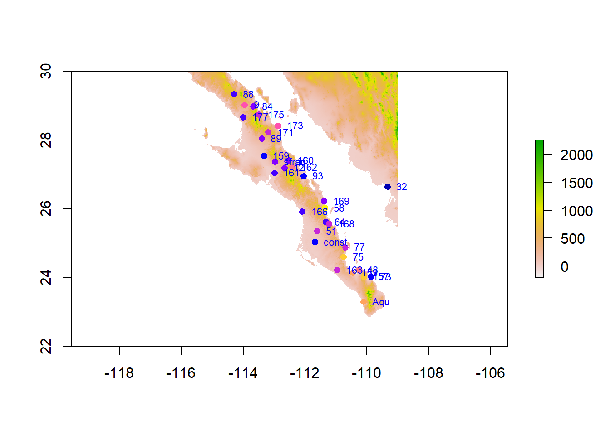

Load the raster and point data in and crop to an appropriate size to display the locations of the sampling plots and make a label for each site.
library(tidyverse)
── Attaching core tidyverse packages ──────────────────────── tidyverse 2.0.0 ──
✔ dplyr 1.1.4 ✔ readr 2.1.5
✔ forcats 1.0.0 ✔ stringr 1.5.1
✔ ggplot2 3.5.1 ✔ tibble 3.2.1
✔ lubridate 1.9.3 ✔ tidyr 1.3.1
✔ purrr 1.0.2
── Conflicts ────────────────────────────────────────── tidyverse_conflicts() ──
✖ dplyr::filter() masks stats::filter()
✖ dplyr::lag() masks stats::lag()
ℹ Use the conflicted package (<http://conflicted.r-lib.org/>) to force all conflicts to become errors
library(raster)
Loading required package: sp
Attaching package: 'raster'
The following object is masked from 'package:dplyr':
select
library(sf)
Linking to GEOS 3.12.1, GDAL 3.8.4, PROJ 9.3.1; sf_use_s2() is TRUE
url <-"https://github.com/DyerlabTeaching/Raster-Data/raw/main/data/alt_22.tif"raster <-raster(url)# Load and format beetle databeetle_url <-"https://raw.githubusercontent.com/dyerlab/ENVS-Lectures/master/data/Araptus_Disperal_Bias.csv"read_csv(beetle_url) %>%st_as_sf(coords =c("Longitude", "Latitude"), crs =4326) -> beetles
Rows: 31 Columns: 9
── Column specification ────────────────────────────────────────────────────────
Delimiter: ","
chr (1): Site
dbl (8): Males, Females, Suitability, MFRatio, GenVarArapat, GenVarEuphli, L...
ℹ Use `spec()` to retrieve the full column specification for this data.
ℹ Specify the column types or set `show_col_types = FALSE` to quiet this message.
alt <-crop( raster, baja_extent )alt.df <- alt %>%rasterToPoints() %>%as.data.frame() %>%transmute(Longitude = x,Latitude = y,Elevation = alt_22)plot(alt)plot( beetles["Suitability"], pch=16, add=TRUE) +text(st_coordinates(beetles)[,1], st_coordinates(beetles)[,2], labels = beetles$Site, pos =4, cex =0.7, col ="blue")

integer(0)
Use the click() function to crop the raster and filter the sites to include only the sampling locations that are in the Cape regions (e.g., south of site labeled #75).
Coordinate system already present. Adding new coordinate system, which will
replace the existing one.
cape_map
Warning: Raster pixels are placed at uneven horizontal intervals and will be shifted
ℹ Consider using `geom_tile()` instead.
The peninsula of Baja California is divided into the States of Baja California Norte and Baja California Sur. The border between these states is at 28° Latitude. Divide the sample locations into groups based on which state they are located in and plot the average sex ratio of the sample sites partitioned by each site.
state_sex_ratios <- beetles %>%mutate(State =if_else(Latitude >=28, "Baja California Norte", "Baja California Sur")) %>%group_by(State, Site) %>%summarize(Avg_MFRatio =mean(MFRatio, na.rm =TRUE)) %>%ungroup()
`summarise()` has grouped output by 'State'. You can override using the
`.groups` argument.
sex_ratio_plot <- state_sex_ratios %>%ggplot(aes(x =factor(Site), y = Avg_MFRatio, fill = State)) +geom_bar(stat ="identity", position ="dodge") +labs(x ="Site", y ="Average Male-Female Ratio (MFRatio)", title ="Average Sex Ratio by Site and State",fill ="State") +theme_minimal() +scale_fill_manual(values =c("Baja California Norte"="skyblue", "Baja California Sur"="salmon"))sex_ratio_plot
Is there a relationship between the observed sex ratio and the elevation at that site? Plot these, and in the text, perform a correlation test (cor.test()) and report the values as if you were writing them up in a results section.
beetles2 <- beetles %>%mutate(Longitude =st_coordinates(.)[, 1],Latitude =st_coordinates(.)[, 2]) %>%rowwise() %>%mutate(Elevation =extract(cape_raster, matrix(c(Longitude, Latitude), ncol =2))) %>%ungroup()# Plot Sex Ratio vs. Elevationsex_ratio_elevation_plot <-ggplot(beetles2, aes(x = Elevation, y = MFRatio)) +geom_point(color ="dodgerblue") +geom_smooth(method ="lm", color ="darkorange", se =TRUE) +labs(x ="Elevation (meters)", y ="Male-Female Ratio (MFRatio)", title ="Relationship Between Sex Ratio and Elevation") +theme_minimal()# Display plotsex_ratio_elevation_plot
`geom_smooth()` using formula = 'y ~ x'
Warning: Removed 25 rows containing non-finite outside the scale range
(`stat_smooth()`).
Warning: Removed 25 rows containing missing values or values outside the scale range
(`geom_point()`).
# Perform correlation testcorrelation_result <-cor.test(beetles2$Elevation, beetles2$MFRatio, use ="complete.obs")# View correlation test resultscorrelation_result
Pearson's product-moment correlation
data: beetles2$Elevation and beetles2$MFRatio
t = -0.48838, df = 4, p-value = 0.6508
alternative hypothesis: true correlation is not equal to 0
95 percent confidence interval:
-0.8794674 0.7112751
sample estimates:
cor
-0.2372197
A Pearson’s test was done to determine if there was a relationship between sex ratio and site elevation. The p value was determined to be 0.6508, which far exceeds the accepted significance level. There is insignificant evidence to support a relationship between sex ratio in beetles and site elevation.